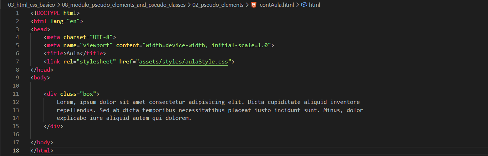
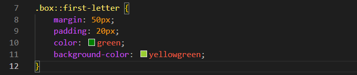
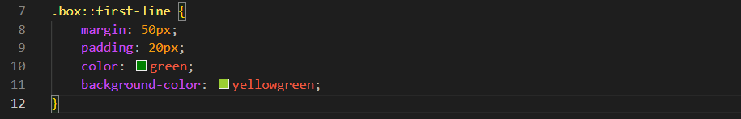
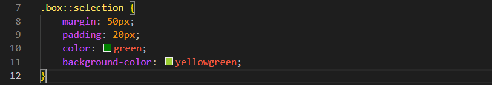
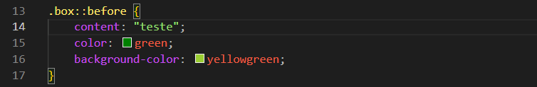
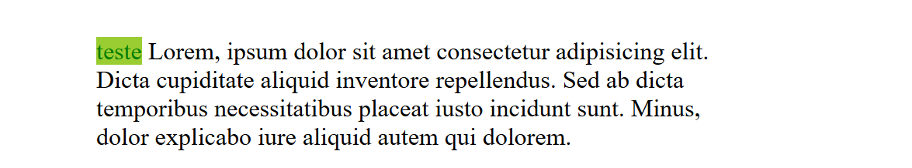
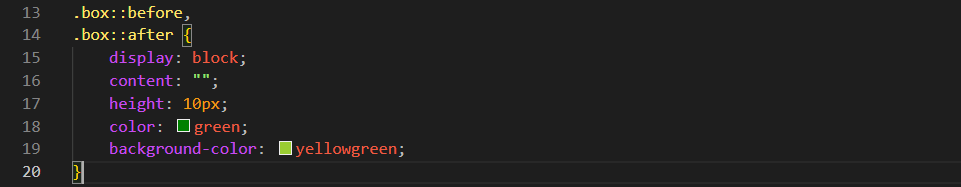
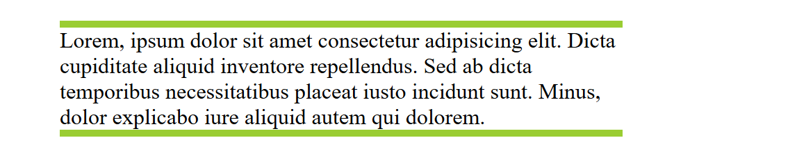

Pseudo-Elements
Intro
Aqui iremos ver sobre estilizar uma parte especifica de nosso elemento.
Aqui iremos ver sobre estilizar uma parte especifica de nosso elemento.

Com base em nosso codigo de exemplo, e poder estilizar uma parte especifica, podemos utilizar pseudo elementos. Para isso podemos fazer da seguinte forma:
.box::first-letter{}: com ele temos como destaque em nossa primeira letra.
Exemplo:

Com isso selecionamos a primeira linha.
Exemplo:

Com ele basciamente e feito o destaque por exemplo quando um usuario seleciona uma parte do texto.

Nesse caso nao temos nem uma selecao especifica, mas podemos usar por exemplo, criando um conteudo vazio, com isso sera "criado um novo elemento" antes do elemento selecionado.
Exemplo:

Exemplo no Navegador:

Faz basicamente o mesmo que o before, porem depois do elemento como o nome diz.
Com ele conseguimos fazer coisas como isso:

No navegador:
